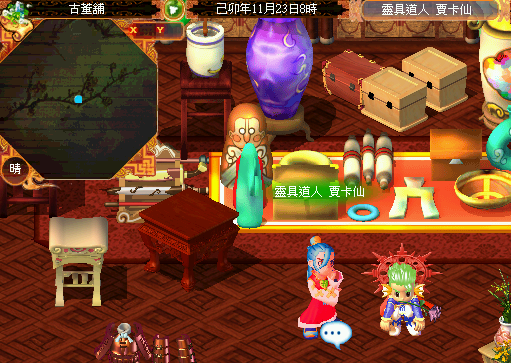
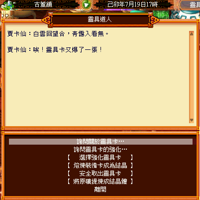

連結：https://mo.lager.com.tw/default/index_news?id=2758
於 郡業古董鋪 找「靈具道人 - 賈卡仙」拆解靈具卡或裝備卡。

| 名稱 | 說明 |
|---|---|
| 六方晶原礦 | 9 個可合成 1 個六方金剛結晶體。 |
| 六方金剛結晶體 | 強化靈具卡的必要材料。 |
| 名稱 | 使用範圍 |
|---|---|
| 淡彩強化安穩劑 | +0 ~ +5 |
| 暗彩強化安穩劑 | +6 ~ +9 |
| 名稱 | 使用範圍 |
|---|---|
| 青塵強化凝固劑 | +0 ~ +3 |
| 赤土強化凝固劑 | +4 ~ +6 |
| 白灰強化凝固劑 | +7 ~ +9 |
